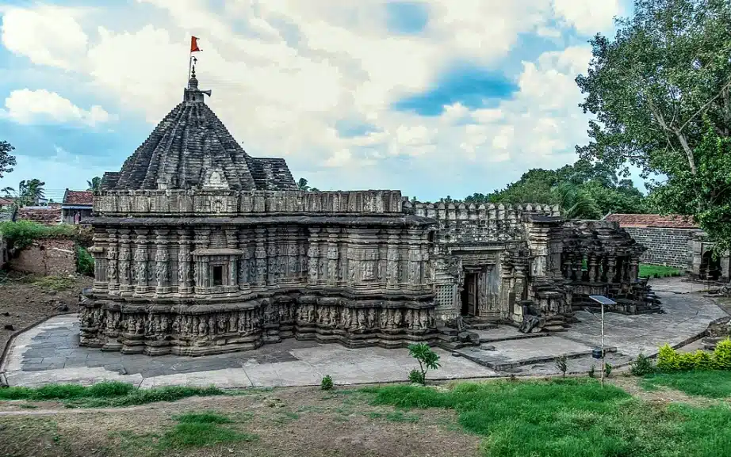

Kopeshwar Temple
Kopeshwar Temple is at Khidrapur, Kolhapur district, Maharashtra. It is a Hindu temple dedicated to Shiva. This temple is in Maharashtra It is also accessible from Sangli as well. It was built in the 12th century by Shilahara king Gandaraditya between 1109 and 1178 CE. It is to the east of Kolhapur, ancient & artistic on the bank of the Krishna river. Even though Silaharas were Jain kings, they built and renovated various Hindu temples, thus depicting their respect and love for all religions. Kopeshwar means angry Shiva.

Swarga Mandap
When we enter the Svarga Mandap, it is open to the sky with a circular opening. It is supported by 48 hand-carved pillars. Looking at the sky one gets mesmerised and gets a feeling of looking at the heavens, justifies the name Svarga Mandap. At the periphery of the Svarga Mandap we can see beautifully carved idols of Lord Ganesh, Karthikeya swami, Lord Kubera, Lord Yamraj, Lord Indra, etc. along with their carrier animals like peacock, mouse, elephant etc. If we stand at the center of the Svarga Mandap we can see idols of Lord Brahma on the left hand side wall of the entrance of sabha mandap. In the centre, we can see the Shiva Kopeshwar shivling situated in the Garbh Gruha & towards right hand side wall we can see the beautifully carved idol of Vishnu. So at one glance we can see the Tridev ' Brahma Mahesh Vishnu '. A stone pedestal mounted east of the temple's southern door has a carved inscription in Sanskrit, written in Devnagari script . It mentions that the temple was renovated in 1136 by Raj Singhadev of yadav dynasty.
History
The present temple was built by Shilahara kings who were native to Maharashtra. They were feudatories of Rashtrakuta. Apart from the legend, the name might have originated from the ancient name of the town, which was "Koppam". The town witnessed two major battles. The first one took place in 1058 CE between Chalukya king Ahavamalla and Chola king Rajendra. The Chola king Rajadhiraja was killed during the battle, and the coronation of the second king, Rajendra Chola took place right on the battlefield. The second battle took place between Shilahara king Bhoj-II and Devagiri Yadav king Singhan-II, during which king Bhoj-II was captured by Yadavas and was kept captive on the fort of Panhala. This event is recorded in the 1213 CE inscription near the south entrance of the temple. This battle brought the rule of the Kolhapur branch of Shilaharas to end.[1] There are about a dozen inscriptions on the inside and outside of this temple, out of which only a couple of inscriptions are in good condition now. These inscriptions reveal the names of few kings and their officers. All these inscriptions except one are in Kannada language and script. The only Devanagari inscription in Sanskrit language is by Singhan-II and is located on the outer wall near South entrance of the temple.